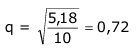

Aufgabe 248 Jedes Medikament hat eine Langzeitwirkung, die man so bestimmt, indem man seine Konzentration im Blut über Tage misst. Der Patient hat 70 mg eingenommen, das entspricht einer Konzentration von 10 mg/l. Nach einem Tag konnte man noch 7,2 mg/l, nach 2 Tagen noch 5,18 mg/l im Blut feststellen. Nach wie viel Tagen ist die Konzentration unter 0,5 mg/l gesunken? Die Abnahme ist exponentiell, da die Konzentration nicht gleichmäßig abnimmt. K2 = K0 * q2 5,18 mg/l = 10 mg/l * q2 |:10 5,18 ------ = q2 |√ 10  Kn = K0 * qn 0,5 mg/l = 10 mg/l * 0,72n | :10 0,5 ----- = 0,72n 10 Logarithmieren: 0,5 lg ------ = lg 0,72n 10 lg 0,05 = n * lg 0,72 | :lg 0,72 lg 0,05 - 1,301 n = ---------- = ----------- = 9,1 Tage --> nach 10 Tagen lg 0,72 - 0,1427